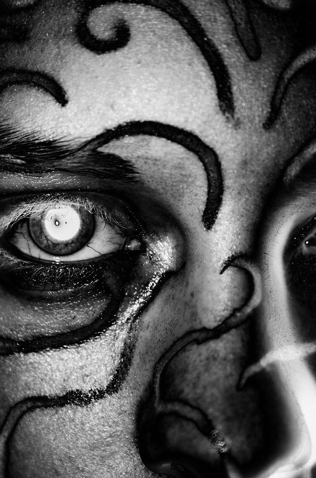

ost of Canan's childhood was spent in a fishing village along the Southern coast of Filnguard. Raised by loving parents and respected by the other children, Canan always aimed to make his village proud. He would watch proud knights of the kingdom patrol, protecting the peace. He became inspired, infected with a dream in a land of "peasants." He was ripe for the darkness to feed off of. The dark took his dreams, used them, sensed them, and tried to corrupt him into becoming a catalyst to hurt the world. His people, his village and family were slaughtered by monsters and creatures of old right in front of his own eyes. He was left... untouched. No knights to be seen, a manipulation from the dark to attempt to trick young Canan into believing the kingdom failed him. Some people believed he was pure; and that the darkness couldn't touch him truly. Others believe who he became was because of the dark infecting him. Most believed he was the first mistake the Gods had ever made, a boy, ridden with Darkness, yet hunting down the very Darkness which plagued his own soul, rather than any light.
